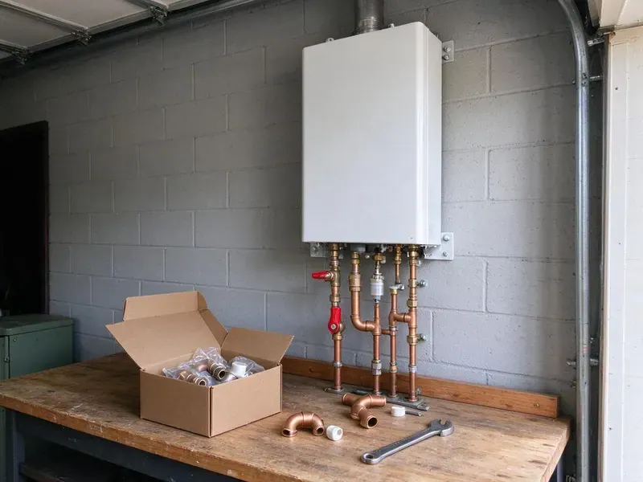

Water Softener Installation in La Crosse, WI
For professional water softener installation in La Crosse, WI, trust the experienced plumbers at HKV Plumbing to get the job done right.
- Quality Brands
- Honest Pricing
- Fast, Dependable Service
- Licensed Plumbers

Need a Water Softener Installed in La Crosse, WI?
Improve your home's water quality and protect your investments with our professional installation services.
Professional Water Softener Installation in La Crosse, WI
HKV Plumbing understands the local water challenges faced by homeowners in La Crosse, WI. Our experienced plumbers provide custom water softener installation solutions, making sure your home receives clean, soft water for years to come.
Our expertise includes:
- Accurate water hardness testing and system sizing
- Salt-based softeners with Fleck and Clack control valves
- Complete water hardness testing and analysis

Additional Plumbing Installation Services in La Crosse, WI
We install water heaters, pumps, lines, and fixtures across La Crosse, WI with careful, permitted work that passes inspection the first time.


Customers
Why Choose HKV Plumbing for Water Softener Installation in La Crosse, WI?
We help you navigate the options, from salt-based ion exchange systems to salt-free alternatives, to find the right fit for your La Crosse home and water usage.
- Healthier Skin & Hair, Eliminate the harsh effects of minerals, leading to softer skin and shinier hair.
- Clean Installation, We use quality fittings and include a bypass valve for easy service.
- Energy Efficiency, Water heaters operate more economically without mineral scale, saving on energy bills.
Citywide Coverage
From older homes without loops to new builds, we serve every part of La Crosse. We can add a loop where none exists so you can enjoy soft water throughout the house.
Experienced Team
Each plumber at HKV Plumbing is continuously trained on the latest water softener technologies and installation best practices. This means your system is installed correctly and performs well for years to come.
Safety-First Approach
Before, during and after installation, our team follows safety protocols to protect your home and our technicians. You can trust HKV Plumbing for a secure and professionally executed water softener installation that meets all regulatory requirements.
Trusted Certified La Crosse Plumbing Services Professionals
At HKV Plumbing, we take pride in providing certified plumbing services throughout La Crosse, WI. Backed by recognized industry credentials, our experienced plumbers combine technical skill with genuine customer care. Whether it is repair, installation, or maintenance, we follow strict safety and quality standards to deliver long-lasting results you can trust.
Call Us Now PHCC Plumbing Contractor Recognition
PHCC Plumbing Contractor Recognition Better Business Bureau (BBB) Accreditation
Better Business Bureau (BBB) Accreditation Angi Certified Pro
Angi Certified Pro ISO 9001 Quality Management Certification
ISO 9001 Quality Management CertificationLong-Lasting Water Softener Installation Services in La Crosse, WI
Combination Softener and Carbon Filter Systems in La Crosse, WI
Municipal water often contains chlorine or chloramine that affects taste and smell. A carbon filter paired with a softener removes those chemicals and protects resin. We install combination systems with filter and softener tanks or dual-stage units. This setup improves both water quality and feel. Many homeowners notice a big difference in taste.

Reverse Osmosis Drinking Water Systems in La Crosse
Reverse osmosis systems remove dissolved solids, which can be high in some water supplies. We install RO units under the kitchen sink with a dedicated faucet. Some systems also connect to refrigerators or ice makers. RO pairs well with a softener for complete water treatment. We change filters on a schedule so the system keeps working well.
Water Hardness Testing and Programming in La Crosse
Accurate testing is key for proper softener settings. We test your water for hardness, iron and chlorine before installation. Then we program regeneration frequency and salt dosage. This helps reduce salt use while keeping water soft. We review settings with you so you understand how the system works.
Pelican Water Softener Installation in La Crosse, WI
Pelican Water Systems offer a variety of water treatment solutions, including both salt-based softeners and salt-free conditioners. If you've chosen a Pelican system for your La Crosse, WI home, HKV Plumbing can provide expert installation. Our plumbers make sure of proper sizing, secure connections and correct startup procedures to maximize the effectiveness and lifespan of your Pelican water softener or conditioner.
Softener Loop Installation in La Crosse
A softener loop is the plumbing connection that routes your main water line through a softener. Many newer homes include a loop, but older homes often do not. We cut into the main line, install the loop and add a bypass valve. We keep outdoor hose bibs and irrigation on hard water when possible to save salt. A proper loop makes future service simple.
Water Softener Installation for New Construction in La Crosse, WI
Planning for a new home in La Crosse, WI? Installing a water softener during new construction is an excellent time to integrate it cleanly into your plumbing system. We work with builders and homeowners to design and install the perfect water softening solution from the ground up, preventing hard water issues before they even start.
Residential Water Softener Installation in La Crosse
Hard water can damage plumbing and appliances, leading to expensive repairs. Our residential water softener installation services are designed to protect your home's entire plumbing system. We assess your water usage and hardness levels to recommend the right system size and type, ensuring optimal performance for your La Crosse household. From initial consultation to final setup, we handle every detail with precision.

Water Softener Replacement & Upgrades in La Crosse, WI
If your old water softener is failing, inefficient or no longer meets your needs, HKV Plumbing offers professional water softener replacement and upgrade services in La Crosse, WI. We can remove your outdated unit and install a newer, more efficient model, often with modern features like smart controls or higher capacity. Upgrading can save you money on salt and water usage in the long run.
Water Softener Installation Near Me in La Crosse, WI
If you're searching for 'water softener installation near me' in La Crosse, WI, look no further than HKV Plumbing. Our local teams are strategically located to provide fast response times and expert service throughout the area. We focus on local homeowners, ensuring quick and efficient installations.
When you need water softener installation near me, our local plumbers can schedule quickly. We bring testing kits and common systems on our trucks. Many installs are finished in a few hours.
HKV Plumbing at a Glance
- Fully licensed plumbing team covering La Crosse, WI
- Same-day appointments and 24/7 emergency response
- Clear written estimates, no hidden fees
- 4.8-star rated by 448+ Wisconsin customers
La Crosse Map
La Crosse Information
- Population
- 51,327
- Area codes
- 608/920/507
- Service area
- La Crosse and communities within 40 miles
- Nearby
- Eau Claire, Madison, Wausau, Oshkosh
Water softener installation is important for homes in La Crosse, WI because hard water can damage plumbing and appliances over time, leading to reduced efficiency and costly repairs.
Expert Services
Trust our professionals for reliable HKV Plumbing solutions in La Crosse, WI.
Our Specialized Plumbing Services in La Crosse, WI
At HKV Plumbing, we provide a complete range of plumbing services across La Crosse, WI. From leak detection to full system installations, our team ensures fast, precise, and affordable service for both residential and commercial properties. Explore our core services below:


How Our Water Softener Installation Process Works in La Crosse, WI
Our water softener installation process is designed to be simple and stress-free for homeowners in La Crosse, WI.
Request a Quote
Call (414) 432-4641 to schedule a water test and consultation. We suggest a system and provide upfront pricing.
Install the System
We connect the softener to your loop or install a new loop, add a bypass valve and set up the drain. We fill the brine tank and program the controller.
Test and Explain
We test water hardness after installation to confirm the system is working. Then we go over salt refills, settings and maintenance.
Frequently Asked Questions About Water Softener Installation in La Crosse
Most water softener installations cost $1,500 to $4,000 including equipment. Adding a new softener loop usually adds $500 to $1,500 depending on access.
We install softeners with Fleck and Clack control valves and other dependable brands. We recommend systems based on performance and serviceability.
While some homeowners attempt DIY installation, it's usually recommended to hire a professional. Incorrect installation can lead to leaks, inefficient operation or even damage to your plumbing system. Professional installation provides proper sizing, correct connections and adherence to local plumbing codes.
With proper maintenance, a quality water softener system can last between 10 and 15 years, and sometimes even longer. The lifespan depends on the quality of the unit, the hardness of your water and how well it is maintained. Regular servicing can help lengthen its life.
Installing a water softener offers numerous benefits, including preventing scale buildup in pipes and appliances, extending appliance lifespan, reducing soap and detergent usage and improving the feel of your skin and hair. It also makes cleaning easier and keeps clothes looking brighter.
While some homeowners attempt DIY water softener installation, it's highly recommended to hire a professional plumber. Proper installation involves careful plumbing connections, understanding water pressure and ensuring code compliance. Professional installation prevents leaks, supports reliable performance and protects your warranty.
Salt-based softeners add a small amount of sodium. Many homeowners add an RO system at the kitchen sink for drinking water.
Most residential water softener installations can be completed in half a day, typically between 3 and 6 hours. This timeline can vary based on the complexity of your home's existing plumbing and the type of system being installed. We aim for efficient service with minimal disruption.
What People Are Saying About Our Plumbing Experts?

Daniel K.
A pipe burst at 11 pm and they actually answered. The plumber showed up within the hour, shut everything down, and had us back to normal the next morning. Could not ask for more.
Emergency Plumbing · Janesville, WI
Mark T.
When our office needed drain cleaning, HKV Plumbing provided quick, reliable service. The plumber arrived on time and made sure every drain flowed perfectly before leaving. Very satisfied.
Drain Cleaning · Madison, WI
Robert G.
The trenchless sewer replacement saved our front yard. They walked us through the camera inspection footage first so we knew exactly what we were paying for.
Sewer Line Replacement · Eau Claire, WI
Sofia M.
Two new toilets installed in one visit, no mess left behind, and the tech even adjusted a faucet he noticed was dripping. Fair pricing and really friendly.
Toilet Installation · Eau Claire, WI
Patricia H.
We had a slab leak that two other companies could not find. HKV Plumbing located it in under an hour, explained our options, and the price matched the quote to the dollar.
Slab Leak Repair · Janesville, WILaura S.
I scheduled a water heater replacement, and the team made the process smooth and affordable. The new unit works perfectly, and they cleaned up after completing the job.
Water Heater Replacement · Oshkosh, WI